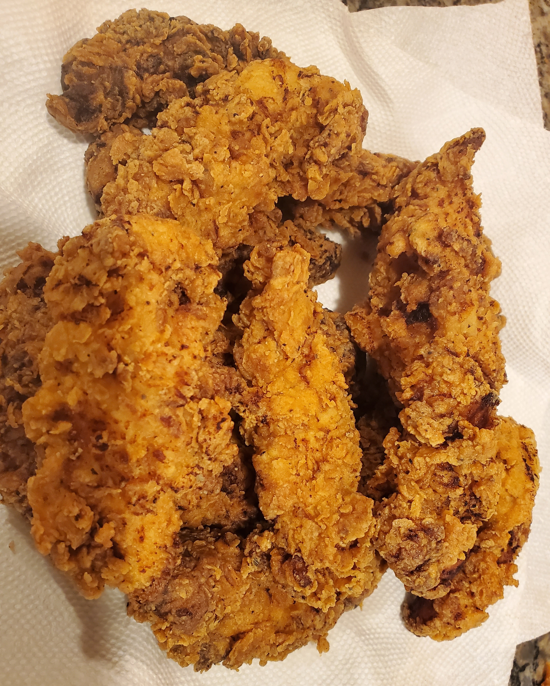

Buttermilk Fried Chicken

This is my favorite and most experienced way to fry chicken. If you want flavorful chicken, I'd recommend marinating it in the buttermilk mixture for at least a few hours,
but up to a day before you end up cooking it. This'll make the chicken juicier, more tender, and more flavorful.
Ingredients
Marinade
- Chicken Tenders or Thighs
- 2 Teaspoons of Black Pepper
- 1 Teaspoon of Salt
- 1 Teaspoon of Paprika
- 1 Teaspoon of White Pepper
- 2 Fresh Sprigs of Rosemary
- 1/2 Teaspoon of Ground Thyme
- 1/2 Teaspoon of Dried Oregano
- 1/2 Teaspoon of Cayenne Pepper
- 2 Cups of Buttermilk
Seasoned Flour
- 2 Cups of All Purpose Flour
- 1 Teaspoon of Cayenne Pepper
- 1 Teaspoon of Garlic Powder
- 1 Teaspoon of White Pepper
- 1 Teaspoon of Onion Powder
- 1/4 Cup of Breadcrumbs
Steps
- First toss your chicken in a bowl with all of the herbs and spices in the marinade minus the buttermilk.
- Add in at least 2 cups of buttermilk or until the chicken is completely covered.
- Cover the bowl and let them rest and marinate for a few hours to an entire day.
- After marinating you should make your seasoned flour mixture. Add in a tablespoon of the buttermilk mixture from the chicken as well.
- Whisk all of the flour mixture together thoroughly
- Take out your chicken one at a time and press the chicken into the flour mixture with some strengh behind it. Make sure all of the chicken is covered.
- Heat up a large pan or fryer and heat the oil until its around 350 degrees Fahrenheit.
- Add in the chicken in the oil (placing away from you) and fry them for about 7 to 10 minutes, flip, and then do the same for the other side or until golden brown.
- When finished let it rest on a raised cooling rack so it stays crispy.